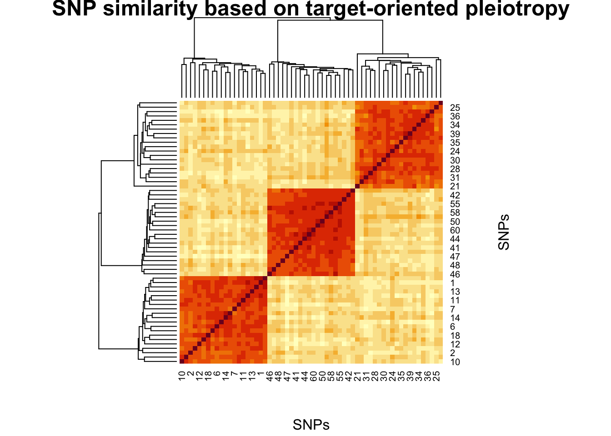

set.seed(1)
# Dimensions
n_trait <- 80 # GPMap traits
n_snp <- 60 # SNPs for target trait
K <- 3 # biological modules
# Trait-module loadings
B <- matrix(0, n_trait, K)
B[1:25, 1] <- 1 # module 1 traits
B[26:50, 2] <- 1 # module 2 traits
B[51:80, 3] <- 1 # module 3 traits
# SNP-module membership
M <- matrix(0, n_snp, K)
M[1:20, 1] <- 1
M[21:40, 2] <- 1
M[41:60, 3] <- 1
# Signed target-trait effects
z_target <- rnorm(n_snp, mean = 5, sd = 1)
# Make one module protective/opposite direction
z_target[21:40] <- -z_target[21:40]
# Pleiotropy matrix: rows = GPMap traits, columns = SNPs
X <- B %*% t(M) + matrix(rnorm(n_trait * n_snp, 0, 0.5), n_trait, n_snp)
# Orient pleiotropy relative to the target trait
X_star <- sweep(X, 2, sign(z_target), `*`)
# Cosine similarity between SNP pleiotropy profiles
cosine_sim <- function(A) {
A_norm <- sweep(A, 2, sqrt(colSums(A^2)), `/`)
t(A_norm) %*% A_norm
}
S <- cosine_sim(X_star)
# Cluster SNPs
hc <- hclust(as.dist(1 - S), method = "average")
# Visualise similarity matrix
heatmap(
S,
Rowv = as.dendrogram(hc),
Colv = as.dendrogram(hc),
scale = "none",
main = "SNP similarity based on target-oriented pleiotropy",
xlab = "SNPs",
ylab = "SNPs"
)